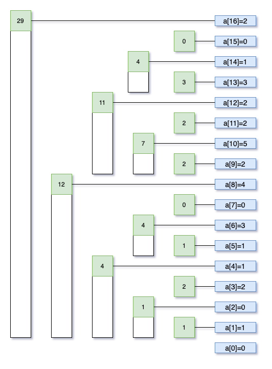

详解二叉索引树(Binary Index Tree又名Fenwick Tree)
何为BIT BIT是一种数据结构，名为树其实用数组即可表达。其主要作用是给定了一个数组(或多维数组)，BIT可用来：
O(logN)的复杂度计算给定范围的和,也就是求sum(low, high)O(logN)的复杂度更新数组的一个元素
其构造方法巧妙但简单，可谓大道至简。
给定一个数组a[0 ... N-1],长度N。
BIT表示为indexes[0 ... N],长度N+1。indexes[i]=sum(g(i) ... i], g(i)=i-i&(-i)，注意是左开右闭区间。i&(-i)得到的是一个数字的二进制表示中只留下最右的1后的数字，比如12=[1100],则12&(-12)只留下最右的1就成了4=[0100]。
注意到indexes[]从1开始计数，所以始终有indexes[0]=0。为了说明方便，在数组a[]前面添加了个元素0。

看图说话，如此构造后，原数组的和sum[0 ... i]就可以通过把能覆盖range[0 ... i]的indexes[]加起来得到。比如求sum[0 ... 14]，步骤如下，辅以图示。
先加上indexes[14]，覆盖了a[14], a[13]。
14=[1110],最右1留下后是2=[10],减去后得到12,加上indexes[12]。12=[1100],最右1留下后是4=[100],减去后得到8,加上indexes[8]。8=[1000],最右1留下后是8=[1000],减去后得到0，结束。
所以何为BIT,其本质是通过原数组构造一个新数组indexes[]，其中每个元素表示原数组中一段连续子数组的和 。范围求和就从线性遍历原数组(O(N))，变成了在indexes[]中快速查找(O(logN))能覆盖所求范围的那几个元素。
而更新则是与求和相反的一个过程,原数组一个元素a[i]更新后，首先需要更新indexes[i]，然后要不停向上，更新每个覆盖了a[i]的indexes元素。比如,a[9]=2 -> a[9]=10,则有：
计算一个更新delta, delta=10-2，更新indexes[9]+=delta,
9=[1001],最右1留下后是1=[0001],加上后得到10,更新indexes[10] += delta。10=[1010],最右1留下后是2=[0010],加上后得到12,更新indexes[12] += delta。12=[1100],最右1留下后是4=[0100],加上后得到16,更新indexes[16] += delta。
代码如下:
1 2 3 4 5 6 7 8 9 10 11 12 13 14 15 16 17 18 19 20 21 22 23 24 25 26 27 28 29 30 31 32 33 34 35 36 37 38 39 40 41 42 43 44 45 46 class BIT private int [] indexes; private int [] nums; public BIT (int [] nums) this .nums = nums; indexes = new int [nums.length + 1 ]; for (int i = 0 ; i < nums.length; i++) { add(i + 1 , nums[i]); } } public void update (int i, int val) int delta = val - nums[i]; add(i + 1 , delta); nums[i] = val; } public int query (int i, int j) return query(j + 1 ) - query(i); } private int query (int i) int sum = 0 ; while (i > 0 ) { sum += indexes[i]; i -= lowBit(i); } return sum; } private void add (int i, int delta) while (i < indexes.length) { indexes[i] += delta; i += lowBit(i); } } private int lowBit (int i) return i & (-i); } }
两个变招 上面介绍的最基本的索引树支持两项操作，单点更新和范围索引(此处是求和)。在此基础上，可以稍加改变即可支持范围更新和单点索引,更进一步,可以支持范围更新和范围索引。
范围更新和单点索引 上面代码中的update(i, val)每次只能更新一个元素，如果要更新一个范围内所有元素呢,比如给nums[low...high]都加上val。一个方法是一个个更新，复杂度O(mlogN),m是范围长度。
1 2 3 4 5 public void add (int low, int high, int val) for (int i = low; i <= high; ++i) { add(i+1 , val); } }
有没有可能O(logN)实现范围更新？可以，通过两次单点更新实现，add(low, val)和add(high+1, -val)。原理是，
add(low, val)影响indexes[j], j >= low，每个范围和都增加val。add(high+1, -val)影响indexes[j], j > high，每个范围和减掉val。最终的效果是，对于indexes[j], low <= j <= high，范围和增加val。而对于indexes[j], j > high，一增一减正好抵消。
注意此处的indexes[]初始化为0,表示的是原数组更新后差值的范围和。
代码如下:
1 2 3 4 5 6 7 8 9 10 11 12 13 14 15 16 17 18 19 20 21 22 23 24 25 26 27 28 29 30 31 32 33 34 35 36 37 38 class BIT private int [] indexes; private int [] nums; public BIT (int [] nums) this .nums = nums; indexes = new int [nums.length + 1 ]; } public int query (int i) int sum = 0 ; ++i; while (i > 0 ) { sum += indexes[i]; i -= lowBit(i); } return sum + nums[i]; } public void add (int low, int high, int val) add(low, val); add(high+1 , -val); } private void add (int i, int val) ++i; while (i < indexes.length) { indexes[i] += val; i += lowBit(i); } } private int lowBit (int i) return i & (-i); } }
这个实现导致只能单点索引某个元素而不能索引范围和了。既支持范围更新又支持范围索引的BIT也是存在的，但需要构造两个索引数组。
范围更新与范围索引 此变招要义在于通过两个indexes[]索引数组来构造最终的和。试想，在add(low, high, val)后，我们希望得到的求和sum[0...i]应该如以下所示：
i < low,则sum[0...i] = 0，因为nums[0...low)没任何增减。low <= i <= high,则sum[0...i]= val * (i - low + 1),因为nums[low...i]都增加了val.i > high,则sum[0...i] = val * (high - low + 1),因为只有nums[low...high]增加了val.
以上结构可通过indexes1[]和indexes2[]组合构造:
对于indexes1[i], low <= i <= high，范围和增加val。query(indexes1, i) * i有：
i < low, 则query(indexes1, i) = 0, 从而query(indexes1, i) * i = 0.low <= i <= high, 则query(indexes1, i) = val,从而query(indexes1, i) * i = val * i.i > high, 则query(indexes1, 1) = 0, 从而query(indexes1, i) * i = 0.
对于indexes2[i],每次add(low, high, val)，都有:
1 2 add(indexes2, low, val * (low - 1 )); add(indexes2, high + 1 , -val * high);
意味着，
i < low, 则query(indexes2, i) = 0low <= i <= high, 则query(indexes2, i) = val * (low - 1)i > high, 则query(indexes2, 1) = val * (low - 1) - val * high
结合起来,query(indexes1, i) * i - query(indexes2, i)就得到了我们希望的sum[0...i]，我就问你是不是很精妙？
1 2 3 4 5 6 7 8 9 10 11 12 13 14 15 16 17 18 19 20 21 22 23 24 25 26 27 28 29 30 31 32 33 34 35 36 37 38 39 40 41 42 43 44 45 46 47 48 49 50 51 52 53 54 55 class BIT private int [] indexes1; private int [] indexes2; private int [] nums; public BIT (int [] nums) this .nums = nums; indexes1 = new int [nums.length + 1 ]; indexes2 = new int [nums.length + 1 ]; for (int i = 0 ; i < nums.length; ++i) { add(i, i, nums[i]); } } public void add (int low, int high, val) add(indexes1, low, val); add(indexes1, high + 1 , -val); add(indexes2, low, val * (low - 1 )); add(indexes2, high + 1 , -val * high); } private void add (int [] indexes, int i, int val) ++i; while (i < indexes.length) { indexes[i] += val; i += lowBit(i); } } public int sum (int low, int high) return sum(high) - sum(low - 1 ); } public int sum (i) return query(indexes1, i) * i - query(indexes2, i); } private int query (int [] indexes, int i) int sum = 0 ; ++i; while (i > 0 ) { sum += indexes[i]; i -= lowBit(i); } return sum; } private int lowBit (int i) return i & (-i); } }
二维BIT 最常规也就是单点更新和范围索引的BIT可以推广到二维，即给定一个二维数组a[N][M]，建立其对应的二维BIT,indexes[N+1][M+1]，闲话少叙，直接上代码，看到更新和索引中的迭代及终止条件就是一维的单循环到二维的双层循环的简单推广。
1 2 3 4 5 6 7 8 9 10 11 12 13 14 15 16 17 18 19 20 21 22 23 24 25 26 27 28 29 30 31 32 33 34 35 36 37 38 39 40 41 42 43 44 45 46 47 48 49 50 51 52 53 54 55 56 57 58 59 60 61 62 63 64 65 66 67 class BIT2D private int [][] indexedTree; private int [][] matrix; private int rowLen = 0 ; private int colLen = 0 ; public BIT2D (int [][] matrix) rowLen = matrix.length; if (rowLen == 0 ) { return ; } colLen = matrix[0 ].length; if (colLen == 0 ) { return ; } this .matrix = new int [rowLen][colLen]; indexedTree = new int [rowLen + 1 ][colLen + 1 ]; for (int i = 0 ; i < matrix.length; i++) { for (int j = 0 ; j < matrix[0 ].length; j++) { update(i, j, matrix[i][j]); } } } public void update (int row, int col, int val) if (rowLen == 0 || colLen == 0 ) { return ; } int delta = val - matrix[row][col]; matrix[row][col] = val; for (int i = row + 1 ; i <= matrix.length; i += lowBit(i)) { for (int j = col + 1 ; j <= matrix[0 ].length; j += lowBit(j)) { indexedTree[i][j] += delta; } } } public int sumRegion (int row1, int col1, int row2, int col2) if (rowLen == 0 || colLen == 0 ) { return 0 ; } return getSumRegion(row2, col2) - getSumRegion(row2, col1 - 1 ) - getSumRegion(row1 - 1 , col2) + getSumRegion(row1 - 1 , col1 - 1 ); } private int getSumRegion (int row, int col) int sum = 0 ; for (int i = row + 1 ; i > 0 ; i -= lowBit(i)) { for (int j = col + 1 ; j > 0 ; j -= lowBit(j)) { sum += indexedTree[i][j]; } } return sum; } private int lowBit (int i) return i & (-i); } }
专题:
算法详解
本文发表于 2021-03-03，最后修改于 2023-12-12。
上一篇 « 详解归并排序之应用(Merge sort)
下一篇 » 详解线段树之入门(Segment Tree)